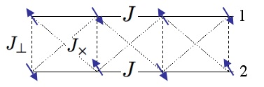
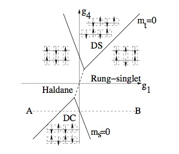
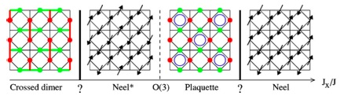
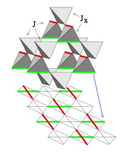
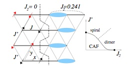
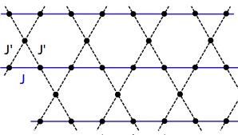
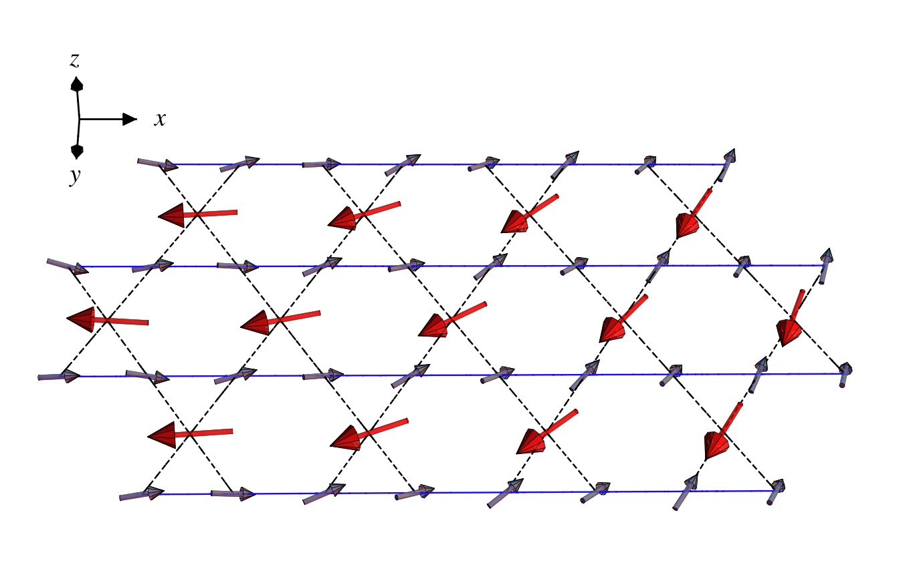

Magnetic Long Range Order versus Spontaneous Dimerization
Spatially anisotropic J1-J2 model:
frustrated ladder, and two-dimensional problem. Dimerized phase and transitions in
a spatially anisotropic square lattice antiferromagnet,
O.A. Starykh and L. Balents, Phys. Rev. Lett. 93 127202 (2004).


S=1/2 checkerboard antiferromagnet: crossed-dimer phase at small inter-chain exchange;
dimer ordering in three-dimensional pyrochlore.
Anisotropic pyrochlores and the phase diagram of the checkerboard antiferromagnet ,
O.A. Starykh, A. Furusaki and L. Balents, Phys. Rev. B 72 , 094416 (2005).


Triangular lattice antiferromagnet: collinear antiferromagnet at weak zig-zag interaction
J'. Ordering in spatially anisotropic triangular antiferromagnets ,
O.A. Starykh and L. Balents, Phys. Rev. Lett. 98 , 077205 (2007).

Kagome lattice antiferromagnet: non-coplanar magnetic ordering.
Spatially anisotropic Heisenberg kagome antiferromagnet ,
A.P. Schnyder, O.A. Starykh and L. Balents, Phys. Rev. B 78, 174420 (2008).

